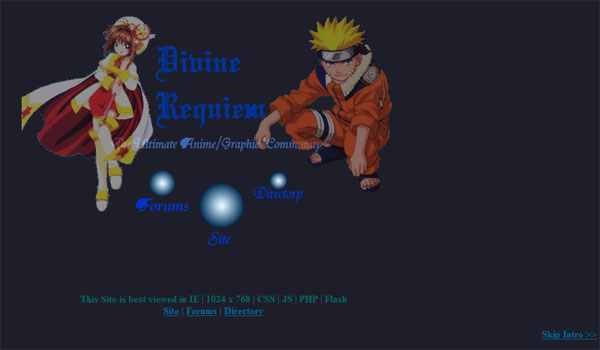
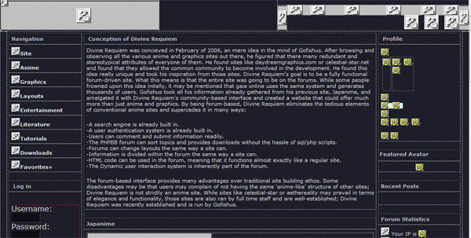

Divine Requiem (Designed using PHP w/AJAX, Flash and MySQL in 2006)
The site that I had concieved of and the culmination of all my design principles and ideas. An Anime and Graphics site that incorporated the community as an aspect: Coppermine Gallery and PHPBB was used for users to interact more and share many of their graphics and multimedia with each other. At its peak, the forum had well over 1000 users, but the site had to be shut down due to preparation for university. Shown below is the splash screen, done in Flash.

The site rendered in Dreamweaver. PHP is not available because it has not been uploaded to a server.
